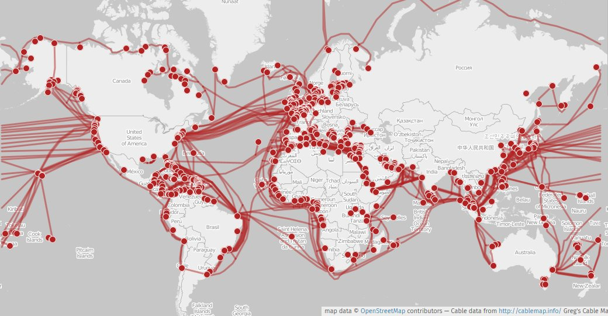
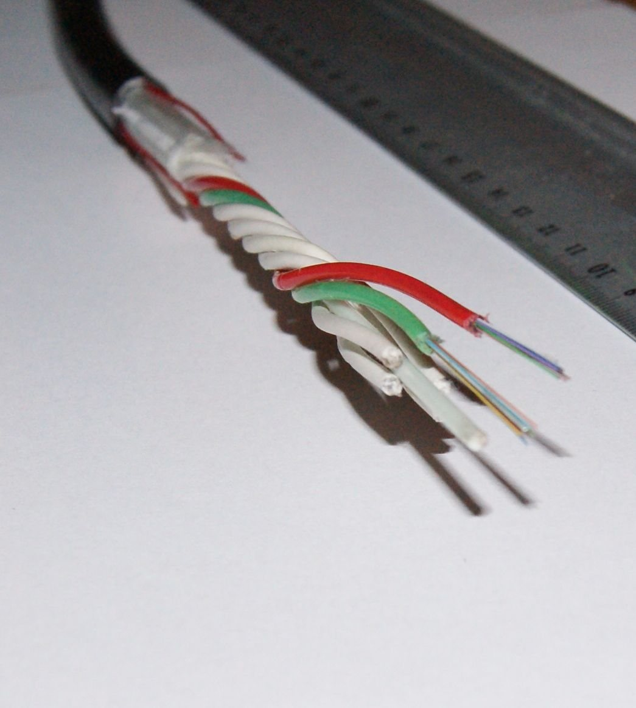
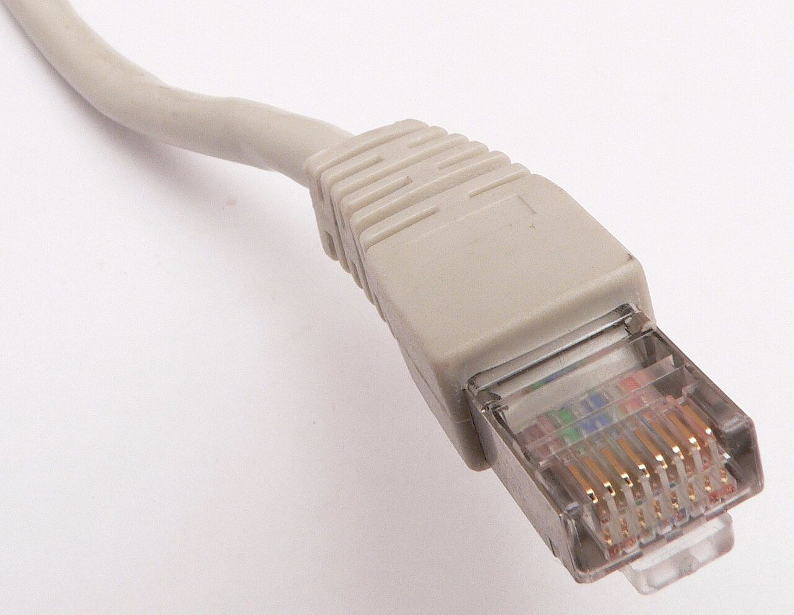

네트워크
주소·이름·경로·전송
친구에게 편지를 보내려면 주소가 있어야 합니다. 편지는 우체국 여러 곳을 거쳐 친구 집에 도착합니다. 컴퓨터끼리 메시지를 주고받을 때도 똑같습니다. 주소가 있고, 중간에 거쳐 가는 곳이 있습니다. 컴퓨터들이 서로 이어져 메시지를 주고받는 길을 네트워크라고 합니다. 인터넷은 전 세계를 잇는 가장 큰 네트워크입니다.
- 컴퓨터의 주소가 어떻게 생겼는지 말할 수 있습니다.
- 사이트 이름이 주소로 바뀌는 과정을 설명할 수 있습니다.
- 메시지가 여러 곳을 거쳐 도착하는 과정을 설명할 수 있습니다.
- 인터넷이 안 될 때 어디서 막혔는지 차례로 확인할 수 있습니다.
14.1네트워크는 컴퓨터 사이의 우편망입니다#
지금까지 본 컴퓨터는 주방 한 곳이었습니다. 네트워크(network)는 주방과 주방을 잇는 길, 곧 다른 컴퓨터와 데이터를 주고받는 길입니다.
이 길에는 두 역할이 있습니다. 먼저 말을 거는 쪽이 클라이언트(client), 기다리다가 답하는 쪽이 서버(server)입니다. 브라우저로 쇼핑몰을 열면 브라우저가 클라이언트, 쇼핑몰 컴퓨터가 서버입니다. 클라이언트가 보내는 것을 요청, 서버가 돌려주는 것을 응답이라고 부릅니다.
왜 잘게 나눠 보낼까
사진 한 장을 통째로 보내는 것은 이삿짐을 긴 트럭 한 대에 다 싣는 것과 같습니다. 트럭이 지나는 동안 다른 차는 기다려야 하고, 사고가 나면 전부 다시 보내야 합니다.
그래서 네트워크는 데이터를 작은 조각으로 나누고, 조각마다 받는 곳 주소와 번호를 붙여 따로 보냅니다. 이 조각이 패킷(packet)입니다. 번호표가 붙은 작은 소포입니다.
작게 나누면 길을 여럿이 함께 쓸 수 있습니다. 내 소포 사이사이에 남의 소포가 끼어 갑니다. 또 하나를 잃어버려도 그 조각만 다시 보내면 됩니다.
그 길은 대부분 케이블입니다. 집 안에서는 랜선이나 와이파이 전파가, 도시와 대륙 사이에서는 빛으로 신호를 보내는 광섬유가 소포를 나릅니다.



14.2IP 주소와 포트: 건물 주소와 호수#
소포를 보내려면 받는 곳 주소가 있어야 합니다. 네트워크에서 컴퓨터의 위치를 가리키는 번호가 IP 주소(IP address)입니다. 203.0.113.9처럼 0부터 255까지의 숫자 네 개를 점으로 이어 씁니다. 우편으로 치면 건물 주소입니다.
IP는 Internet Protocol의 줄임말입니다. 프로토콜(protocol)은 주고받는 양쪽이 지키기로 한 약속을 뜻합니다.
그런데 건물 주소만으로는 모자랍니다. 컴퓨터 한 대에서는 웹 서버, 데이터베이스, 원격 접속 프로그램이 동시에 돌아갑니다. 소포가 건물에 도착한 뒤 어느 프로그램에게 줄지도 정해야 합니다. 이때 쓰는 번호가 포트(port)입니다. 0부터 65535까지의 숫자이고, 건물 안의 호수에 해당합니다.
203.0.113.9:443은 "203.0.113.9 건물의 443호"라는 뜻입니다. 주소가 맞아도 그 호수에서 기다리는 프로그램이 없으면 받을 사람이 없습니다.| 포트 | 보통 누가 쓰나 |
|---|---|
| 80, 443 | 웹 서버 (HTTP, HTTPS) |
| 22 | SSH 원격 접속 |
| 5432, 3306 | 데이터베이스 (PostgreSQL, MySQL) |
| 3000, 5173, 8080 | 개발용 서버 |
브라우저 주소창에 포트를 적지 않으면 https는 443호, http는 80호로 갑니다. 개발 서버에 :3000을 꼭 붙여야 하는 이유입니다.
소켓: 프로그램이 받은 우편함
프로그램은 운영체제에게 "3000호로 오는 것은 저에게 주세요"라고 신청합니다. 그러면 운영체제가 우편함을 하나 내어 줍니다. 이 우편함이 소켓(socket)입니다. 프로그램은 소켓에서 꺼내 읽고, 소켓에 넣어 보냅니다.
같은 호수는 보통 한 프로그램만 차지할 수 있습니다. 개발 서버를 켜다가 address already in use라는 오류를 만났다면 누군가 그 호수에 이미 살고 있다는 뜻입니다. 대개는 끄지 않은 이전 서버입니다.
IP 주소는 어느 컴퓨터인지, 포트는 그 안의 어느 프로그램인지를 정합니다.
숫자 네 개짜리 주소(IPv4)는 약 43억 개뿐이라 모자랍니다. 그래서 2001:db8::1처럼 훨씬 긴 IPv6 주소를 함께 씁니다.
14.3localhost와 바인딩: 창구를 어느 쪽으로 낼까#
localhost는 특별한 이름입니다. 언제나 지금 이 기기 자신을 뜻하고, 주소로는 127.0.0.1입니다. 받는 곳에 "우리 집"이라고 쓴 편지와 같습니다. 내가 쓰면 내 집으로 오지만, 친구가 쓰면 친구네 집으로 갑니다.
그래서 휴대전화에서 localhost:3000을 열면 휴대전화는 자기 자신의 3000호를 두드립니다. 거기에는 아무도 없습니다.
그럼 휴대전화에서 노트북의 실제 주소인 192.168.0.5:3000을 입력하면 될까요? 서버 설정에 달렸습니다. 서버 프로그램은 켜질 때 어느 주소로 들어오는 요청을 받을지 정합니다. 이것을 바인딩(binding)이라고 합니다. 건물로 치면 창구를 어느 쪽으로 내느냐입니다.
127.0.0.1에 바인딩하면 건물 안쪽으로만 창구를 냅니다. 같은 컴퓨터의 프로그램만 접속할 수 있습니다.0.0.0.0에 바인딩하면 모든 출입구에 창구를 냅니다. 같은 와이파이의 다른 기기도 접속할 수 있습니다.
192.168.0.5:3000으로 접속합니다.많은 개발 서버는 안전을 위해 127.0.0.1에만 바인딩한 채로 켜집니다. 다른 기기에서 시험하려면 --host 0.0.0.0 같은 옵션을 줘야 합니다. AI 도구에게 "휴대전화에서도 열리게 해 줘"라고 하면 흔히 이 설정을 바꿔 줍니다. 무엇이 열렸는지는 알고 써야 합니다.
0.0.0.0은 서버가 받는 범위를 정하는 표시이지 브라우저에 입력하는 주소가 아닙니다. 접속할 때는 그 컴퓨터의 실제 IP를 씁니다. 카페 같은 공용 와이파이에서 이렇게 열어 두면 모르는 사람도 접속할 수 있습니다.
localhost는 언제나 입력한 기기 자신입니다.
14.4공유기와 라우터: 집 안 주소, 바깥 주소, 길 찾기#
방금 본 192.168.0.5는 집 안에서만 통하는 주소입니다. 옆집 노트북도 같은 주소를 쓸 수 있습니다. 단지마다 502호가 있는 것과 같습니다.
- 사설 IP(private IP)는 집이나 회사 안에서만 쓰는 주소입니다. 보통
192.168.이나10.으로 시작합니다. - 공인 IP(public IP)는 인터넷 전체에서 하나뿐인 주소입니다. 통신사가 우리 집 공유기에 하나를 내줍니다.
공유기는 단지의 우편실입니다. 집 안 기기가 바깥으로 소포를 보내면, 공유기는 보낸 곳을 자기 공인 IP로 바꿔 적고 그 내용을 장부에 남깁니다. 답장이 오면 장부를 보고 원래 기기에 전해 줍니다. 이 일을 NAT(Network Address Translation, 주소 변환)라고 합니다.
그래서 바깥에서 먼저 집 안 기기에 말을 걸 수는 없습니다. 장부에 기록이 없어 공유기가 누구에게 줄지 모릅니다. 집 노트북에 띄운 서버를 멀리 있는 친구가 열지 못하는 이유입니다.
라우터: 다음 우체국만 정합니다
편지는 받는 집으로 곧장 날아가지 않습니다. 동네 우체국에서 집중국으로, 다시 다음 집중국으로 건너갑니다. 각 단계는 주소를 보고 다음에 어디로 넘길지만 정합니다. 네트워크에서 이 일을 하는 장치가 라우터(router)이고, 라우터 하나를 건너는 것을 홉(hop)이라고 합니다.
내 기기는 인터넷 지도를 모릅니다. "집 밖으로 가는 것은 전부 공유기에게"만 압니다. 이렇게 바깥으로 나가는 첫 관문을 게이트웨이(gateway)라고 합니다. 집에서는 공유기가 게이트웨이입니다.
패킷이 거쳐 가는 라우터를 직접 볼 수 있습니다.
traceroute example.com윈도우에서는 tracert입니다. 한 줄이 홉 하나이고, 첫 줄은 대개 우리 집 공유기입니다. * * *만 나오는 줄은 답하지 않는 라우터일 뿐 고장이 아닙니다.
한 걸음 더같은 동네인지 어떻게 알까 (서브넷 마스크)
기기는 받는 곳이 같은 네트워크 안인지 알아야 직접 건넬지 게이트웨이에 맡길지 정할 수 있습니다.
192.168.0.5/24의 /24는 "앞의 24비트, 곧 앞 숫자 세 개(192.168.0)가 같으면 같은 동네"라는 뜻입니다. 이 범위가 서브넷(subnet)이고, 같은 내용을 255.255.255.0으로 적은 것이 서브넷 마스크입니다. 192.168.0.7은 같은 동네라 직접 보내고, 198.51.100.7은 게이트웨이에 넘깁니다.
라우터도 이런 범위가 적힌 표를 보며, 맞는 범위가 여럿이면 더 좁은 쪽을 따릅니다. VPN을 켜면 이 표가 바뀌어 가는 길이 달라질 수 있습니다.
14.5DNS: 이름을 주소로 바꿔 주는 안내소#
사람은 203.0.113.9 같은 숫자 대신 example.com 같은 이름을 씁니다. 하지만 패킷에 적을 수 있는 것은 IP 주소뿐입니다. 이름을 주소로 바꿔 주는 체계가 DNS(Domain Name System)입니다. 상호를 말하면 주소를 찾아 주는 안내소입니다.
- ① 캐시를 먼저 봅니다. 브라우저와 운영체제는 최근에 찾은 주소를 적어 둡니다. 1장의 캐시와 같은 생각입니다.
- ② 없으면 리졸버에게 묻습니다. 리졸버(resolver)는 대신 발품을 팔아 주는 DNS 서버로, 보통 통신사가 운영합니다.
- ③④⑤ 리졸버가 위에서부터 물어 내려갑니다. 맨 위의 루트 서버, 그다음
.com서버를 거쳐 그 도메인을 담당하는 서버에서 답을 얻습니다. - ⑥ 답을 돌려주고 캐시에 넣습니다.
TTL: 답의 유통기한
담당 서버는 답에 "300초 동안은 다시 묻지 말고 이 답을 쓰세요" 같은 유효 시간을 붙입니다. 이것이 TTL(Time To Live)입니다.
그래서 서버를 옮기고 DNS를 고쳐도 모두가 곧바로 새 주소로 오지는 않습니다. 캐시에 옛 주소가 남은 사람은 TTL이 끝날 때까지 옛 서버로 갑니다.
레코드: DNS에 적어 두는 한 줄
| 종류 | 뜻 | 예 |
|---|---|---|
| A | 이름 → IPv4 주소 | example.com → 203.0.113.9 |
| AAAA | 이름 → IPv6 주소 | example.com → 2001:db8::1 |
| CNAME | 이름 → 다른 이름(별명) | www.example.com → example.com |
CNAME은 "그 이름으로 다시 찾아보세요"라는 뜻이라 조회가 한 번 더 일어납니다.
DNS가 알려 주는 것은 건물 주소까지입니다. 포트나 /api 같은 경로는 정해 주지 않습니다. 이름이 주소로 바뀐다고 서버가 켜져 있다는 뜻도 아닙니다. 도메인을 사는 일과 서버를 켜는 일은 별개입니다.
nslookup example.com맨 위 Server는 내가 쓰는 리졸버이고, Name 아래의 Address가 A 레코드의 값입니다. 맥과 리눅스의 dig example.com은 남은 TTL도 보여 줍니다.
14.6계층과 캡슐화: 편지를 봉투에, 봉투를 상자에#
이름, 주소, 포트, 순서 번호까지 챙길 것이 많습니다. 네트워크는 이 일을 계층(layer)으로 나눠 맡깁니다. 편지를 쓰는 사람은 내용만 씁니다. 봉투는 몇 호의 누구에게 갈지를, 택배 상자는 어느 건물로 갈지를, 배달 차는 다음 정거장까지를 책임집니다.
- 앱이 편지를 씁니다.
GET /cart는 "장바구니를 보여 줘"라는 뜻입니다. 이 내용의 규칙이 HTTP이고 15장에서 다룹니다. - 봉투 담당인 TCP가 포트 번호와 순서 번호를 적습니다. TCP는 다음 절에서 만납니다.
- 상자 담당인 IP가 받는 컴퓨터의 주소를 적습니다.
- 랜선이나 와이파이가 상자를 바로 다음 장치까지 실어 나릅니다.
이렇게 겉포장을 한 겹씩 더하는 것을 캡슐화(encapsulation), 포장마다 적는 딱지를 헤더(header)라고 합니다. 라우터는 상자 겉면의 IP 주소만 보고 넘깁니다. 안의 봉투는 열지 않습니다.
계층을 알면 고장을 찾는 순서가 생깁니다. 상자가 건물에 도착해도 그 호수에 아무도 없을 수 있고, 봉투가 전달돼도 편지 내용이 거절될 수 있습니다.
| 단계 | 확인할 질문 | 도구 | 막히면 보이는 것 |
|---|---|---|---|
| 이름 | 이름이 주소로 바뀌나 | nslookup |
이름을 찾을 수 없음 |
| 길 | 그 주소까지 닿나 | ping, traceroute |
응답 없음 |
| 문 | 그 포트에서 누가 받나 | curl -v |
연결 거부, 시간 초과 |
| 내용 | 서버가 뭐라고 답했나 | curl -v |
404, 500 같은 HTTP 오류 |
curl -v https://example.com윈도우 PowerShell에서는 curl.exe로 입력합니다. Trying 주소:443은 이름을 주소로 바꿔 문을 두드리는 중, Connected to는 문이 열렸다는 뜻입니다. 그 아래 < HTTP/2 200 같은 줄이 서버의 답입니다. 어느 줄에서 멈추는지 보면 막힌 단계를 알 수 있습니다.
한 계층이 성공했다고 그 위 계층까지 성공한 것은 아닙니다. 이름 → 길 → 문 → 내용 순서로 확인합니다.
14.7TCP와 UDP: 등기 우편과 엽서#
IP가 하는 약속은 "최선을 다해 전달해 본다"까지입니다. 패킷은 가다가 사라질 수도, 순서가 바뀔 수도 있습니다. 봉투 계층이 이 문제를 어떻게 다루느냐에 따라 두 방식으로 갈립니다.
TCP(Transmission Control Protocol)는 등기 우편입니다. 받는 쪽이 "여기까지 잘 받았습니다"라는 확인을 돌려보냅니다. 확인이 오지 않은 조각은 보내는 쪽이 다시 보냅니다. 받는 쪽은 번호 순서대로 맞춘 뒤에야 앱에 넘깁니다.
UDP(User Datagram Protocol)는 엽서입니다. 보내면 끝입니다. 도착했는지도, 순서가 맞는지도 확인하지 않습니다. 대신 기다림이 없습니다.
그림의 TCP 쪽에서 C를 보세요. C는 제때 도착했지만 B가 다시 올 때까지 앱에 전달되지 못하고 기다립니다. 정확함의 값은 기다림입니다.
| TCP | UDP | |
|---|---|---|
| 지켜 주는 것 | 빠짐없이, 순서대로 | 없음. 빠진 조각은 앱이 감당 |
| 쓰는 곳 | 웹, 파일 전송, 데이터베이스 접속 | 실시간 게임, 음성·영상 통화, DNS 조회 |
파일은 한 바이트만 빠져도 못 쓰게 되므로 TCP가 맞습니다. 게임 캐릭터의 위치는 0.1초 전 값을 다시 받느니 새 값을 받는 편이 낫습니다. 그래서 UDP를 씁니다. 이 이야기는 25장에서 이어집니다.
3방향 악수: 보내기 전에 연결부터
TCP는 데이터를 보내기 전에 먼저 연결을 맺습니다. 전화를 걸어 "여보세요?", "네, 여보세요.", "네, 말씀드릴게요." 하고 시작하는 것과 같습니다.
클라이언트 → 서버 SYN 연결해도 될까요?
클라이언트 ← 서버 SYN-ACK 네, 저도 준비됐습니다.
클라이언트 → 서버 ACK 확인했습니다. 시작합니다.세 번 주고받아서 3방향 악수(three-way handshake)라고 합니다. 이때 양쪽이 순서 번호를 어디서부터 셀지 맞춥니다. 데이터를 보내기도 전에 왕복이 한 번 든다는 뜻입니다.
TCP가 지켜 주는 것은 상대 컴퓨터까지의 전달입니다. 상대 앱이 주문을 저장했는지는 앱이 돌려준 응답으로 확인해야 합니다.
한 걸음 더TCP는 보내는 속도를 어떻게 정할까 (흐름 제어와 혼잡 제어)
흐름 제어(flow control)는 받는 쪽 우편함이 넘치지 않게 합니다. 받는 쪽이 "이만큼 더 받을 수 있어요"를 계속 알려 주고, 보내는 쪽은 그만큼만 보냅니다.
혼잡 제어(congestion control)는 길이 막히지 않게 합니다. 조금씩 보내기 시작해 잘 가면 늘리고, 분실이 생기면 줄입니다.
그래서 서버와 회선이 빨라도 받는 앱이 천천히 읽거나 길이 붐비면 전송은 느려집니다.
한 걸음 더연결은 어떻게 끝날까 (FIN과 RST)
정상 종료는 FIN으로 합니다. "저는 더 보낼 것이 없습니다"라는 뜻이며, 양쪽이 각자 FIN을 보내야 완전히 닫힙니다.
RST는 즉시 끊기입니다. connection reset 오류가 이것입니다. 보내던 요청이 어디까지 처리됐는지 알 수 없으므로 따로 확인해야 합니다.
한 걸음 더패킷 하나는 얼마나 클까 (MTU와 조각화)
길마다 한 번에 실을 수 있는 상자 크기에 한도가 있습니다. 이 한도가 MTU(Maximum Transmission Unit)이고 흔한 값은 1,500바이트입니다.
TCP는 이 크기에 맞게 알아서 나눠 보냅니다. UDP는 앱이 준 덩어리를 통째로 보내려 하므로, 한도를 넘으면 IP가 여러 조각으로 쪼갭니다. 이것이 조각화(fragmentation)이며, 조각 하나만 잃어도 덩어리 전체를 버립니다.
"작은 메시지는 되는데 큰 메시지만 실패한다"면 MTU를 의심합니다. VPN은 포장을 한 겹 더 씌워 한도가 더 작습니다.
14.8대역폭과 지연: 차선 수와 거리#
"인터넷이 빠르다"에는 서로 다른 두 가지 뜻이 섞여 있습니다.
- 대역폭(bandwidth)은 1초에 보낼 수 있는 양입니다. 단위는 Mbps(초당 메가비트)이고, 도로의 차선 수에 해당합니다.
- 지연(latency)은 하나가 도착하는 데 걸리는 시간입니다. 도로의 길이에 해당합니다. 갔다가 돌아오는 시간은 RTT(Round-Trip Time, 왕복 시간)라고 하며 ms(밀리초, 1,000분의 1초)로 잽니다.
차선을 8개로 늘려도 서울에서 부산까지 가는 시간은 줄지 않습니다. 한꺼번에 지나가는 차가 늘 뿐입니다.
거리는 생각보다 큽니다. 빛은 광섬유 속에서 1초에 약 20만 km를 갑니다. 서울에서 미국 서부까지를 약 1만 km로 잡으면 왕복 2만 km이고, 2만 ÷ 20만 = 0.1초, 곧 100ms입니다. 어떤 회선도 이보다 빠를 수는 없습니다.
이제 RTT가 100ms인 서버에 작은 요청 10개를 보낸다고 합시다.
대역폭을 두 배로 늘려도 위의 1,000ms는 그대로입니다. 작은 요청에서는 시간의 대부분이 왕복 기다림이기 때문입니다. 줄이려면 여러 요청을 하나로 묶거나 동시에 보내 왕복 횟수를 줄여야 합니다. AI가 만든 코드가 반복문 안에서 요청을 하나씩 보내고 있지 않은지 살펴보세요.
대역폭은 큰 것을 보낼 때 중요합니다. 이때 단위를 조심하세요. Mbps의 b는 비트, MB의 B는 바이트입니다. 1바이트는 8비트이므로 100Mbps는 초당 100 ÷ 8 = 12.5MB이고, 1GB(1,000MB) 파일은 1,000 ÷ 12.5 = 80초가 걸립니다.
ping example.com줄마다 나오는 time=12.3 ms가 RTT입니다. 맥과 리눅스에서는 Ctrl + C로 멈춥니다. 국내 사이트와 해외 사이트를 비교해 보세요. 다만 ping에 답하지 않게 막아 둔 서버도 많아서, 응답이 없다고 꺼진 것은 아닙니다.
한 걸음 더먼 곳으로 큰 파일을 보낼 때 (대역폭·지연 곱)
TCP는 확인을 받아야 데이터를 더 보냅니다. 길이 길면 확인이 돌아오는 동안 길 위에 떠 있는 데이터가 많아야 차선을 꽉 채울 수 있습니다. 그 양이 대역폭 × RTT입니다.
100Mbps 회선에 RTT가 80ms라면 100Mb × 0.08 = 8Mb, 곧 1MB입니다. 그런데 한 번에 띄울 수 있는 양이 64KB로 묶여 있다면 64KB ÷ 0.08초 = 초당 800KB, 비트로 약 6.4Mbps밖에 쓰지 못합니다. 먼 곳과 큰 파일을 주고받을 때 유난히 느리면 이 한도를 살펴봅니다.
14.9문지기와 안내 데스크: 방화벽, 리버스 프록시, 로드 밸런서#
실제 서비스에서는 요청이 앱에 닿기 전에 몇 군데를 더 거칩니다.
방화벽(firewall)은 경비실입니다. "어디에서 온 것을 몇 번 포트로 들여보낼지"를 명단으로 정해 두고 나머지는 막습니다. 운영체제에도, 공유기에도, 클라우드에도 겹겹이 있습니다. 서버가 0.0.0.0:8080에 잘 떠 있어도 방화벽이 443만 열어 두었다면 바깥에서는 8080으로 들어올 수 없습니다.
막힌 방식에 따라 증상이 다릅니다. 문 앞까지 갔는데 받는 프로그램이 없으면 곧바로 연결 거부(connection refused)가 납니다. 방화벽이 소포를 말없이 버리면 한참 기다린 끝에 시간 초과(timeout)가 납니다.
리버스 프록시(reverse proxy)는 안내 데스크입니다. 방문자는 데스크만 상대하고, 데스크가 뒤쪽 담당 서버에 요청을 전하고 답을 받아 옵니다. /api로 시작하는 요청은 API 서버로, 나머지는 웹 서버로 보내는 식입니다.
뒤쪽 서버가 여러 대일 때 요청을 고르게 나눠 주는 역할은 로드 밸런서(load balancer)라고 합니다. 서버마다 "살아 있나요?" 하고 주기적으로 물어, 답이 없는 서버에는 보내지 않습니다. 한 장치가 두 역할을 함께 맡는 경우가 많습니다.
안내 데스크에도 자기 규칙이 있습니다. 앱은 50MB까지 올릴 수 있게 만들었는데 프록시의 한도가 10MB라면, 큰 파일은 앱에 닿기도 전에 거절됩니다. "앱 로그에는 아무것도 없는데 오류가 난다"면 앞쪽을 의심합니다. 서버 앞단을 꾸리는 방법은 21장에서 다룹니다.
헷갈리기 쉬운 짝#
| 짝 | 차이 |
|---|---|
| IP 주소 / 포트 | 어느 컴퓨터인가(건물) / 그 안의 어느 프로그램인가(호수) |
| localhost / 0.0.0.0 | 접속할 때 쓰는 "나 자신" / 서버가 "모든 방향에서 받겠다"고 할 때 쓰는 표시 |
| DNS / 라우팅 | 이름을 주소로 바꾸기 / 그 주소까지 길 찾기 |
| TCP / UDP | 빠짐없이 순서대로, 대신 기다림 / 보내면 끝, 대신 빠질 수 있음 |
| 대역폭 / 지연 | 한 번에 얼마나 많이(차선 수) / 한 번 다녀오는 데 얼마나(거리) |
실전 사례#
노트북에서 localhost:3000으로 잘 보이는 앱을 같은 와이파이의 휴대전화로 확인하려는데 열리지 않습니다.
- 이름을 확인합니다. 휴대전화의
localhost는 휴대전화 자신입니다. 노트북에서ipconfig(윈도우)나ifconfig(맥)로 찾은 실제 주소는192.168.0.5입니다. - 문을 확인합니다.
192.168.0.5:3000을 열어도 연결 거부가 납니다. 서버 로그를 보니127.0.0.1:3000에만 바인딩되어 있습니다.0.0.0.0으로 다시 켭니다. - 경비실을 확인합니다. 운영체제가 "들어오는 연결을 허용할까요?"라고 묻습니다. 이 프로그램만 허용하고, 방화벽을 통째로 끄지는 않습니다.
- 내용을 확인합니다. 화면은 뜨는데 목록이 비어 있습니다. 화면 코드가 API를
http://localhost:4000으로 부르고 있었습니다. 휴대전화에게는 이것도 자기 자신입니다. 노트북 주소로 바꿉니다.
막힌 곳은 한 군데가 아니었습니다. 아래 단계부터 차례로 확인했기에 하나씩 풀 수 있었습니다.
한눈에 정리#
- 데이터는 번호가 붙은 작은 패킷으로 나뉘어 가고, 받는 쪽에서 다시 합쳐집니다.
- IP 주소는 건물 주소, 포트는 호수입니다.
localhost는 언제나 입력한 기기 자신입니다. - 서버는 바인딩한 주소로 온 요청만 받습니다.
127.0.0.1은 안쪽만,0.0.0.0은 모든 방향입니다. - 공유기는 NAT로 사설 IP를 공인 IP로 바꾸고, 라우터는 다음에 넘길 곳만 정합니다.
- DNS는 이름을 주소로 바꿉니다. 답은 TTL 동안 캐시되므로 바꾼 내용이 늦게 퍼집니다.
- TCP는 빠짐없이 순서대로, UDP는 기다림 없이 보냅니다.
- 작은 요청의 속도는 대역폭보다 왕복 횟수가 정합니다. 고장은 이름 → 길 → 문 → 내용 순서로 좁힙니다.
확인 문제#
개발 서버를 켰더니 address already in use :3000 오류가 납니다. 무슨 뜻이고 어떻게 해야 할까요?
정답 보기
3000번 포트를 다른 프로그램이 이미 차지하고 있다는 뜻입니다. 대개 끄지 않은 이전 서버입니다. 그 프로그램을 찾아 끄거나 새 서버를 다른 포트로 켭니다.
도메인의 A 레코드를 새 서버 주소로 바꿨습니다. 나는 새 사이트가 보이는데 친구는 아직 옛 사이트가 보인다고 합니다. 왜 그럴까요?
정답 보기
친구 쪽 캐시에 옛 주소가 남아 있기 때문입니다. DNS의 답은 TTL로 정한 시간 동안 다시 묻지 않고 재사용됩니다. 서버를 옮길 때는 옛 서버를 한동안 함께 켜 두는 것이 안전합니다.
nslookup은 주소를 잘 알려 주는데 브라우저로는 접속되지 않습니다. DNS 설정을 다시 고쳐야 할까요?
정답 보기
아닙니다. 이름 단계는 이미 성공했습니다. 다음 단계인 길과 문을 봅니다. 서버가 그 포트에서 기다리는지, 방화벽이 그 포트를 열어 두었는지 curl -v로 확인합니다.
실시간 음성 통화 앱을 만듭니다. 목소리 데이터는 TCP와 UDP 중 어느 쪽으로 보내는 것이 맞을까요?
정답 보기
UDP가 맞습니다. TCP는 잃어버린 조각이 다시 올 때까지 뒤의 조각도 붙잡아 두므로 목소리가 밀립니다. 통화에서는 지나간 소리를 되살리는 것보다 지금 소리를 바로 들려주는 편이 중요합니다.
왕복 100ms인 서버에 작은 요청 10개를 차례로 보내느라 화면이 뜨는 데 1초가 걸립니다. 회선을 100Mbps에서 200Mbps로 올리면 0.5초가 될까요?
정답 보기
거의 그대로입니다. 요청이 작아서 시간의 대부분은 왕복 기다림입니다. 대역폭은 차선 수일 뿐 거리를 줄이지 못합니다. 요청을 묶거나 동시에 보내 왕복 횟수를 줄여야 합니다.
AI에게 맡길 때#
연결 문제를 맡길 때는 "안 돼요"라고만 하지 말고 어느 단계까지 됐는지 확인부터 하게 하세요.
개발 서버를 같은 와이파이의 휴대전화에서 열어 볼 수 있게 해 줘. 지금은 노트북에서 localhost:3000으로만 열려. 먼저 서버가 어느 주소와 포트에 바인딩되어 있는지 확인한 결과를 보여 줘. 그다음 바인딩 설정을 바꾸고, 코드에 localhost로 고정된 API 주소가 있으면 찾아 줘. 방화벽을 통째로 끄거나 모든 포트를 여는 방법은 쓰지 마. 휴대전화에서 입력할 주소와, 시험이 끝난 뒤 원래대로 되돌리는 방법까지 알려 주면 완료야.
받은 답에서 확인할 것: 바인딩 주소를 추측하지 않고 확인했는가, 필요한 포트만 열었는가, 코드 속 localhost를 찾았는가, 되돌리는 방법이 있는가.
용어 정리#
- 패킷packet
- 데이터를 나눠 보내는 작은 조각. 받는 곳 주소와 번호가 붙는다.
- IP 주소IP address
- 네트워크에서 컴퓨터의 위치를 가리키는 번호.
- 포트port
- 한 컴퓨터 안에서 받을 프로그램을 구분하는 번호. 0~65535.
- 소켓socket
- 프로그램이 통신하려고 운영체제에게서 받는 우편함.
- localhost
- 지금 이 기기 자신을 가리키는 이름. 주소로는 127.0.0.1.
- 바인딩binding
- 서버가 어느 주소와 포트로 온 요청을 받을지 정하는 일.
- NATNetwork Address Translation
- 공유기가 사설 IP와 공인 IP를 서로 바꿔 주는 일.
- 라우터router
- 목적지 주소를 보고 패킷을 다음에 넘길 곳을 정하는 장치.
- DNSDomain Name System
- 도메인 이름을 IP 주소로 바꿔 주는 체계.
- TTLTime To Live
- DNS의 답을 캐시에 두고 다시 써도 되는 시간.
- TCPTransmission Control Protocol
- 빠진 조각을 다시 보내고 순서대로 전달하는 전송 방식.
- UDPUser Datagram Protocol
- 확인 없이 보내기만 하는 전송 방식. 빠르지만 빠질 수 있다.
- RTTRound-Trip Time
- 패킷이 갔다가 돌아오는 데 걸리는 왕복 시간.
- 리버스 프록시reverse proxy
- 서버 앞에서 요청을 대신 받아 뒤쪽 서버로 넘겨 주는 장치.
더 읽을거리#
- Cloudflare — DNS record types — 레코드 종류를 하나씩 설명합니다.
- Microsoft Learn — Azure의 가상 네트워크 및 가상 머신 — 주소, 서브넷, 라우팅이 클라우드에서 어떻게 쓰이는지 한국어로 설명합니다.
- MDN — HTTP 개요 — 이 길 위로 웹 요청이 어떻게 오가는지, 다음 장에 앞서 훑어보기 좋습니다.